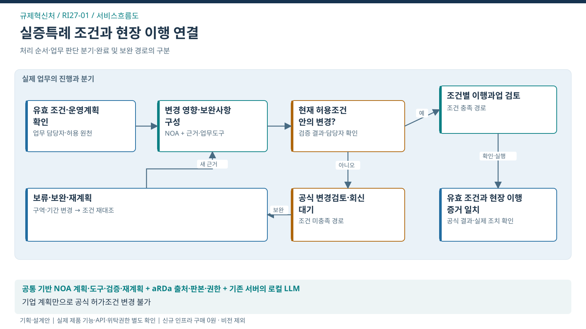

규제혁신처 / SERVICE FLOW
실증특례 조건을 실제 이행으로 연결
허가조건·현장 운영의 불일치 조기 확인과 안전한 실증 이행

처리의 대상
특례 조건·시점·공간·운영 변경
업무 전환
승인조건과 실제 운영 변화의 영향을 추론하고 추가 확인·공식 변경절차·현장 반영 과업을 다시 계획
완료의 기준
공식 회신과 현장 이행 증거가 대상 조건·판본에 맞게 연결됨
이 서비스의 법정업무 기반
규제혁신처와 연결된 업무
법적 수행범위에서 출발하는 AX 제안
연결은 소관·예산권의 확정과 구분
- 모빌리티지원센터·규제샌드박스 ↗지원센터 지정
문제 근거와 기대편익
업무 근거: TS 공개업무 안내
해결할 문제 가설: 조건이 문서별로 나뉘거나 운영계획이 바뀌면 확인 책임·기한·추가 증거가 누락될 수 있음
수혜자: 실증기업·실증지역 이용자
기대효과: 기관 — 변경조건·현장 이행의 일치 확인 / 기업·이용자 — 예방 가능한 실증중단·조건 누락 완화
확인 지표: 중요 조건 누락 / 변경 발생부터 확인까지 시간 / 기업 반복 보완
기준값·목표 개선율: 현업 실증으로 확정
전문가 역할·제외범위·검증조건
전문 판단·실행: 규제·실증 담당자의 조건 해석과 관계기관의 공식 변경 판단
이번 과업 제외: 특례 자동 승인·연장, 공식 허가조건 변경, 사업화 성공 보장
선행 확인: 조건 원본·공식 회신·현장 증거·기업 협조·기존 상담 AI 계약 대조
제품 역할은 적용안. TS 설치·성능·현업 효과의 검증 완료와 구분.